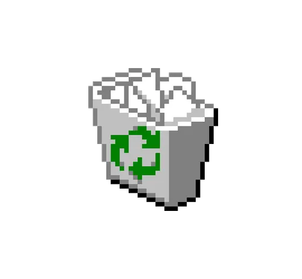
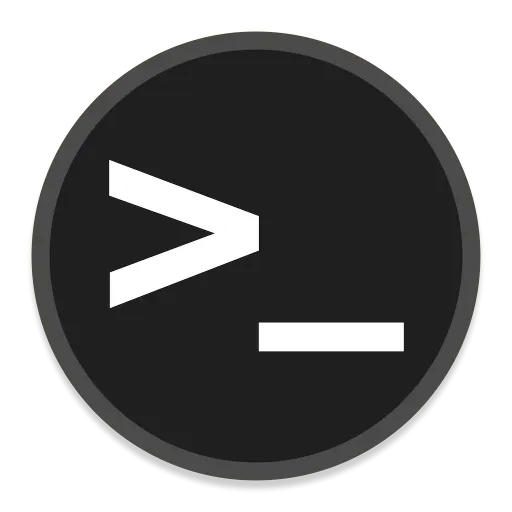

Meu Computador
Lixeira
Navegador
Jogo Snake

MS-DOSMICROSOFT WINDOWS 95
Iniciando sistema...

Meu Computador
Lixeira
MS-DOSDisco Local (C:) — Simulador retro em HTML, CSS e JS puro.
Use os ícones na área de trabalho para abrir o Navegador, o Jogo Snake ou o MS-DOS.
Use as setas do teclado para mover.